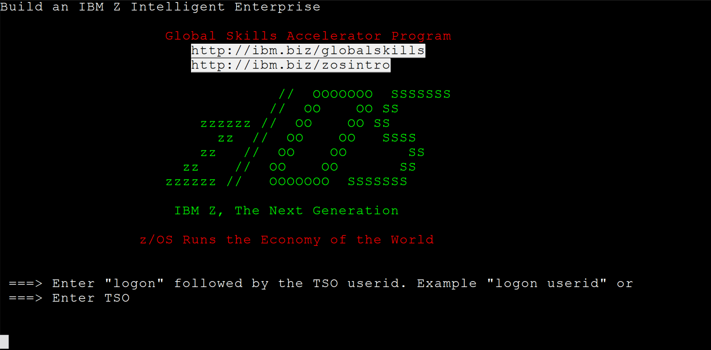

z/OS Fundamentals
Write your notes here and keep everything in one place.
How to use this page
Add small, practical notes under each question. Keep it short per section: definition → why it matters → what you see in ops.
1) What is z/OS? click to expand/collapse
- z/OS is IBM’s flagship mainframe operating system. It is a highly secure, scalable, enterprise-class OS designed to run on IBM z Systems mainframe hardware. It provides a continuously available, high-performance environment for very large workloads such as global financial systems, airline reservations, banking transactions, and government systems. It is the latest evolution of IBM’s mainframe OS family. Its architecture builds on decades of IBM history, evolving from older systems like MVS, OS/390 and others into a modern, 64-bit operating system. z/OS supports thousands of concurrent jobs and users, making it ideal for enterprise computing where reliability and uptime are critical.
-
z/OS is the continuation of IBM’s MVS lineage:
MVS (Multiple Virtual Storage) = the original multi-tasking mainframe OS concept
OS/390 = a later evolution that bundled components into a cohesive OS
z/OS = the modern 64-bit successor, designed specifically for zArchitecture hardware
This continuity is intentional: many enterprise workloads written decades ago still run on z/OS systems today. - List typical subsystems and what they do (JES, CICS, Db2, IMS, TCP/IP…).
- Add “how to recognize it running” (started tasks, address spaces, commands, SDSF).
1-line useful info
Subsystems are specialized components that provide services (like batch, transaction, database, networking) on top of z/OS.
2) How System Admins Interact With z/OS: Interfaces & Legacy Methods click to expand/collapse
- Terminal Emulators (3270 / TN3270)
Mainframe consoles and user sessions traditionally use 3270 terminal protocols. These were originally hardware terminals; today, software 3270 emulators (often TN3270 over TCP/IP) let sysadmins and users interact with z/OS screens from PCs.
Example TN3270 terminal session (Mocha TN3270 emulation) - Dataset naming rules + HLQ/qualifiers (your notes).
- Dataset types you touch often (PS, PDS/PDSE, VSAM, GDG).
1-line useful info
In z/OS, a dataset is the basic “file” concept, and catalog entries tell the system where the data lives.
2) TSO/ISPF navigation + datasets basics click to expand/collapse
Your answer:
- Common ISPF panels you use (e.g., 3.4, editor, command line habits).
- Dataset naming rules + HLQ/qualifiers (your notes).
- Dataset types you touch often (PS, PDS/PDSE, VSAM, GDG).
1-line useful info
In z/OS, a dataset is the basic “file” concept, and catalog entries tell the system where the data lives.
3) Address spaces + virtual storage click to expand/collapse
Your answer:
- Define address space in your own words and how it relates to isolation.
- Explain virtual storage at a high level (private/common, paging terms as you like).
- Write down what you check when something “runs out of storage”.
1-line useful info
Each address space gets its own virtual storage view, which is why many workloads can run safely side-by-side.
4) IPL + JES + job lifecycle click to expand/collapse
Your answer:
- What IPL means for you operationally (what starts, what must come up).
- What JES does and why spooling exists.
- Job states (from submission → execution → output) in your words.
1-line useful info
JES manages batch work by reading jobs, queuing them (spool), selecting execution, and handling output.
5) Sysplex overview click to expand/collapse
Your answer:
- Why sysplex exists (availability, scaling, workload distribution).
- What changes in operations when you have multiple images.
- Terms you want to remember (keep this list small).
1-line useful info
A sysplex lets multiple z/OS systems cooperate as one environment for resilience and shared workload.